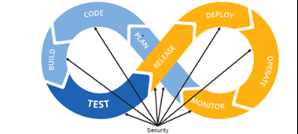

Security practitioners must understand the various levels,
categorizations, and mechanisms related to reporting within the context of a secure
software-development life cycle. Reporting occurs at different levels of the
organization from the board of directors down to the system level. Reports and
report information can generally be grouped or categorized making aggregation and
collection more feasible. Reporting mechanisms will trigger report artifact
generation at various stages within the lifecycle. Reporting is only comprehensive
when a security practitioner ensures reporting occurs at the correct time with
actionable information sent to the appropriate stakeholders.
Objectives
Explain security reporting mechanisms within DevSecOps.
Overview
There are two overarching ways to separate organizational
reporting on security—software security reporting through organizationally defined
development processes and operational security reporting, which deals more with
various levels of reporting within an organizational structure.
Organizational Security
Reporting
There are several ways to define an organizational structure for
reporting and other purposes. As an example, NIST SP 800-39—Managing Information
Security Risk describes a multitiered security reporting structure of three
tiers: organizational, business process, and information systems.
The organizational tier provides the strategy and context for
the entire organization, which includes lower-level reports. This level of the
organization includes stakeholders such as the C-suite and the board of directors,
as reporting must provide information that can be actioned at a high level. It would
be unusual to present a 42-page report listing all high and moderate CVEs for
currently deployed software in the enterprise. Instead, a leader from security might
present the total quantity for high and moderate CVEs, and three potential
approaches for addressing them that include costs.
The next tier down, business process, might be synonymous within
some organizations with a department (e.g., IT department, security operations
center). At this tier, reporting is likely consolidated from each system, software,
or network appliance into dashboards and other visual methods that allow for
situational awareness within the mission or operation of the organization.
At the lowest tier, we have information systems—end points.
Reporting at this level is detailed and quantitative, with system logs, network
logs, configuration baselines, and CVEs for particular software installed on
hardware within the organization. The following figure demonstrates one possible
structure for the flow of security reporting within an organization.
The development life cycle provides many opportunities for
reporting the status of activities related to the maturation or enhancement of an
organization’s source code. The figure below was used earlier to introduce
DevSecOps. Now let’s observe reporting mechanisms during each phase of the life
cycle.

Figure 11: DevSecOps
Reporting mechanisms throughout the software life cycle:
Plan. Opportunities and risks can be captured and recorded within the
risk register. If using Agile then the backlog could provide context for
reporting—for example, do user stories have acceptance criteria that include
security considerations?
Code/Build/Test. Some Integrated development environments (IDE) can
provide developers trustworthiness of third-party libraries or linter
suggestions based on language style guides. Often before source code can be
committed to a repository it must pass a gated check-in where unit, integration,
and/or static analysis tests review the source code for defects. If the source
code is found deficient, it is often shelved (i.e., shelveset) instead of
committed into the code base as a changeset. There is often reporting on the
CWEs or style issues and emails sent about failing to commit the change.
Release/Deploy/Operate/Monitor. Once the source is branched into an
official release there will likely be a final statement regarding the software
risks and mitigations. The organization or authorizing official will use a
document such as a system authorization package, sometimes referred to as SAP,
to decide whether the software system is authorized to operate. Once software is
deployed and operating, it is monitored. Monitoring and reporting mechanisms are
established at the various tiers of the organization such as in the example
given on organizational security reporting—at the information system level,
business level, and strategic tier.
Feedback
Continuous improvement leads to higher levels of maturity. Both
BSIMM and SAMM, as described earlier in this domain, define maturity levels for
respective security practices. SAMM defines three maturity levels as objectives.
Each level within a security practice is characterized by a successively more
sophisticated objective defined by specific activities, with more stringent success
metrics than the previous level. Additionally, each security practice can be
improved independently, though related activities can lead to optimizations.
Retrospective
Continuous improvement in Agile development environments hinges
on creating the opportunity for teams to regularly and frequently reflect on what
was done well, and to identify what can be improved upon. In fact, incorporating
security in this type of environment relies upon these retrospectives that can help
teams uncover opportunities for continuous and incremental improvements.
The frequency of running these retrospectives is up to the team;
they could be scheduled at the end of each sprint, or less frequently as the
organization sees fit. Regardless of the frequency, for these retrospectives to be
effective, a key requirement is to embrace a positive spirit and open mindset to
encourage team members to step forward and share what they believe can result in
improvements for the team.
Lessons Learned
A major lesson learned in software development is that the
quality of the processes used to build software is usually reflected in the quality
of the software product itself. Failure to make improvements to processes despite
the attempt could be due to various reasons, including:
Over-emphasis on assessments and insufficient commitments to making improvements
Starting quickly and not planning properly for the process improvement
Poorly managing the implementation of the improvements
Importance of Feedback Loops
There is a similarity between security reporting information
flowing from one tier of an organization to another and feedback loops integrated
into processes and systems. Feedback loops are integrally important to ensure
stability within development processes.
Continuing the thread on gated check-in: Suppose Jeramie was a
developer at your organization, and he attempted to commit source code that
contained several critical security defects. As a result, the build and test portion
of the pipeline would hopefully reject his changes. This would be good for the
overall status of the branch of software he was attempting to advance with a commit.
However, Jeramie needs to know his changes were not committed. He needs feedback.
Perhaps, the team needs to assist with remediation; in that case, they would require
notification also.
Feedback loops help ensure corrective actions are taken before a
process can progress. In dynamic and automatic systems, output from the system
action is directly input into the system to inform the next action. Feedback can be
positive or negative. When feedback is positive, inputs into a system accelerate or
advance a process. When feedback is negative, inputs back into the system reduce
processing to preserve a stable state— much like the gated check-in slowed Jeramie’s
ability to commit code with defects but with the result being more secure software.
In the most general sense, feedback loops also provide the opportunity for improving
processes in the future.
Security Reporting Mechanisms (2.7)
Security practitioners must understand the various levels, categorizations, and mechanisms related to reporting within the context of a secure software-development life cycle. Reporting occurs at different levels of the organization from the board of directors down to the system level. Reports and report information can generally be grouped or categorized making aggregation and collection more feasible. Reporting mechanisms will trigger report artifact generation at various stages within the lifecycle. Reporting is only comprehensive when a security practitioner ensures reporting occurs at the correct time with actionable information sent to the appropriate stakeholders.
Objectives
Overview
There are two overarching ways to separate organizational reporting on security—software security reporting through organizationally defined development processes and operational security reporting, which deals more with various levels of reporting within an organizational structure.
Organizational Security Reporting
There are several ways to define an organizational structure for reporting and other purposes. As an example, NIST SP 800-39—Managing Information Security Risk describes a multitiered security reporting structure of three tiers: organizational, business process, and information systems.
The organizational tier provides the strategy and context for the entire organization, which includes lower-level reports. This level of the organization includes stakeholders such as the C-suite and the board of directors, as reporting must provide information that can be actioned at a high level. It would be unusual to present a 42-page report listing all high and moderate CVEs for currently deployed software in the enterprise. Instead, a leader from security might present the total quantity for high and moderate CVEs, and three potential approaches for addressing them that include costs.
The next tier down, business process, might be synonymous within some organizations with a department (e.g., IT department, security operations center). At this tier, reporting is likely consolidated from each system, software, or network appliance into dashboards and other visual methods that allow for situational awareness within the mission or operation of the organization.
At the lowest tier, we have information systems—end points. Reporting at this level is detailed and quantitative, with system logs, network logs, configuration baselines, and CVEs for particular software installed on hardware within the organization. The following figure demonstrates one possible structure for the flow of security reporting within an organization.
Figure 10: Multitiered Security Reporting Structure
Software Development Security Reporting
The development life cycle provides many opportunities for reporting the status of activities related to the maturation or enhancement of an organization’s source code. The figure below was used earlier to introduce DevSecOps. Now let’s observe reporting mechanisms during each phase of the life cycle.
Figure 11: DevSecOps
Reporting mechanisms throughout the software life cycle:
Feedback
Continuous improvement leads to higher levels of maturity. Both BSIMM and SAMM, as described earlier in this domain, define maturity levels for respective security practices. SAMM defines three maturity levels as objectives. Each level within a security practice is characterized by a successively more sophisticated objective defined by specific activities, with more stringent success metrics than the previous level. Additionally, each security practice can be improved independently, though related activities can lead to optimizations.
Retrospective
Continuous improvement in Agile development environments hinges on creating the opportunity for teams to regularly and frequently reflect on what was done well, and to identify what can be improved upon. In fact, incorporating security in this type of environment relies upon these retrospectives that can help teams uncover opportunities for continuous and incremental improvements.
The frequency of running these retrospectives is up to the team; they could be scheduled at the end of each sprint, or less frequently as the organization sees fit. Regardless of the frequency, for these retrospectives to be effective, a key requirement is to embrace a positive spirit and open mindset to encourage team members to step forward and share what they believe can result in improvements for the team.
Lessons Learned
A major lesson learned in software development is that the quality of the processes used to build software is usually reflected in the quality of the software product itself. Failure to make improvements to processes despite the attempt could be due to various reasons, including:
Importance of Feedback Loops
There is a similarity between security reporting information flowing from one tier of an organization to another and feedback loops integrated into processes and systems. Feedback loops are integrally important to ensure stability within development processes.
Continuing the thread on gated check-in: Suppose Jeramie was a developer at your organization, and he attempted to commit source code that contained several critical security defects. As a result, the build and test portion of the pipeline would hopefully reject his changes. This would be good for the overall status of the branch of software he was attempting to advance with a commit. However, Jeramie needs to know his changes were not committed. He needs feedback. Perhaps, the team needs to assist with remediation; in that case, they would require notification also.
Feedback loops help ensure corrective actions are taken before a process can progress. In dynamic and automatic systems, output from the system action is directly input into the system to inform the next action. Feedback can be positive or negative. When feedback is positive, inputs into a system accelerate or advance a process. When feedback is negative, inputs back into the system reduce processing to preserve a stable state— much like the gated check-in slowed Jeramie’s ability to commit code with defects but with the result being more secure software. In the most general sense, feedback loops also provide the opportunity for improving processes in the future.